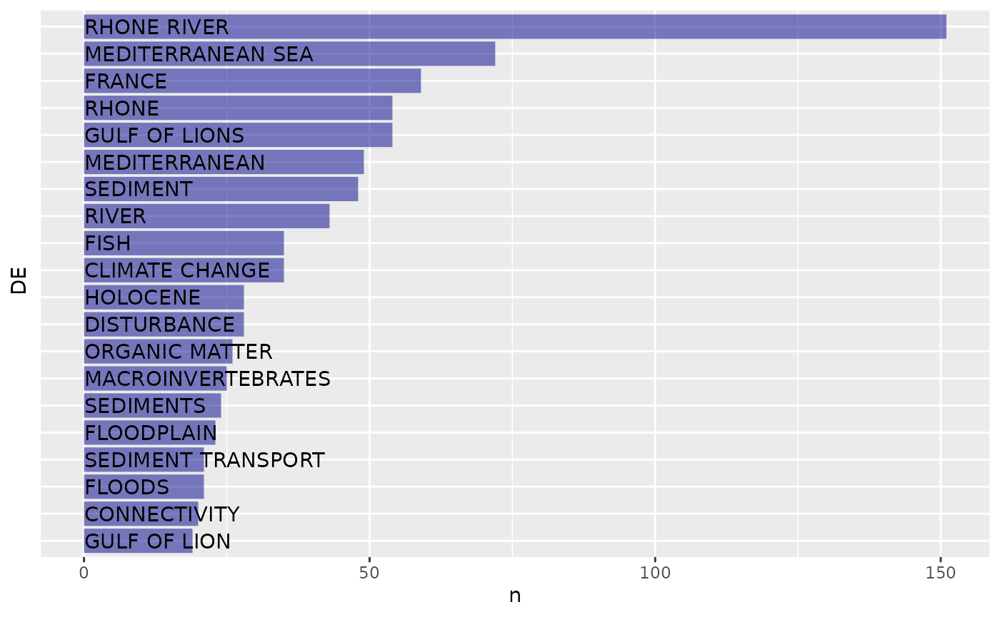
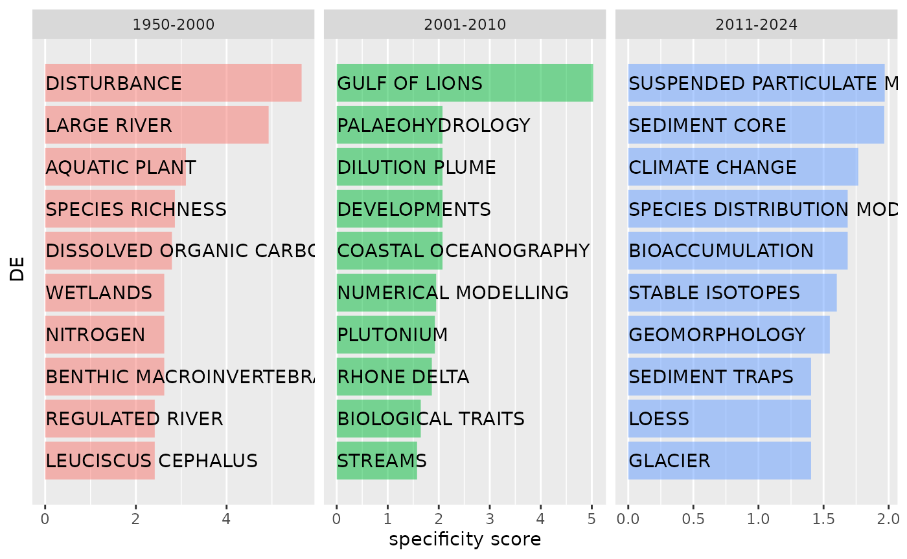

produce_and_display_metrics.Rmd
library(bibou)
library(bibliometrix)
library(tidyverse)The table produced by bib_tib_doc() is structured as
one row = one document.
tib_doc=bib_tib_doc("data/savedrecs_clean.bib")
#>
#> Converting your isi collection into a bibliographic dataframe
#>
#> Done!
#>
#>
#> Generating affiliation field tag AU_UN from C1: Done!Based on this table we can produce a variety of tabular and
graphical results using tidy tools (especially
dplyr and ggplot2). For instance, we can study
the number of documents per publication year, or type, or source.
The table produced by bib_tib_doc_author() is structured
as **one row = one document*author**.
tib_doc_author=bib_tib_doc_author(tib_doc)It includes all descriptors originally in tib_doc,
with
AU descriptor (with only one author name per
row)AU_rank descriptor (with author ranks
from 1 to N where N is the number of authors for a particular
document)AU_weight descriptorThe AU_weight descriptor for the \(i^{th}\) author of a document with \(N\) authors is equal to
\[\forall i \in [1,...,N]\space W_i=(N-i+1)/\frac{2}{N(N+1)}\] Hence for
This table enables to produce all kinds of summary statistics and graphics.
For instance, we can display the distribution of number of documents per author (possibly weighted by the author’s rank in each publication’s authors list):
The table calculated above makes it possible to assess which authors are represented the most in the corpus.
tib %>%
arrange(desc(ndocs_weighted)) %>%
head(10)
#> # A tibble: 10 × 3
#> AU ndocs_weighted ndocs
#> <chr> <int> <int>
#> 1 PIEGAY H 142 51
#> 2 RADAKOVITCH O 134 29
#> 3 RABOUILLE C 108 23
#> 4 MARMONIER P 107 37
#> 5 GREMARE A 95 15
#> 6 OLIVIER JM 93 22
#> 7 GARCIA F 86 4
#> 8 RAIMBAULT P 84 16
#> 9 BERNE S 83 14
#> 10 HEUSSNER S 80 17The table produced by bib_tib_doc_keyword() is
structured as **one row = one document*keyword**.
tib_doc_keyword=bib_tib_doc_keyword(tib_doc)This table can be used to produce a table and graphic showing the most frequently used keywords
tib=tib_doc_keyword %>%
group_by(DE) %>%
summarise(n=n()) %>%
arrange(desc(n)) %>%
slice_max(n,n=20)
tib
#> # A tibble: 20 × 2
#> DE n
#> <chr> <int>
#> 1 RHONE RIVER 151
#> 2 MEDITERRANEAN SEA 72
#> 3 FRANCE 59
#> 4 GULF OF LIONS 54
#> 5 RHONE 54
#> 6 MEDITERRANEAN 49
#> 7 SEDIMENT 48
#> 8 RIVER 43
#> 9 CLIMATE CHANGE 35
#> 10 FISH 35
#> 11 DISTURBANCE 28
#> 12 HOLOCENE 28
#> 13 ORGANIC MATTER 26
#> 14 MACROINVERTEBRATES 25
#> 15 SEDIMENTS 24
#> 16 FLOODPLAIN 23
#> 17 FLOODS 21
#> 18 SEDIMENT TRANSPORT 21
#> 19 CONNECTIVITY 20
#> 20 GULF OF LION 19The most frequent keywords can then be displayed as a graphic either directly through a ggplot2 plot or using package https://github.com/lvaudor/mixr.
mixr::plot_frequencies(tib,cat=DE,frequency=n,fill_fixed="dark blue")
One can also analyse the keywords which are specific to certain parts of the corpus. Let’s divide our present corpus into two parts, based on publication date:
tib_doc_keyword=tib_doc_keyword %>%
mutate(period=cut(PY,breaks=c(1950,2000,2010,2024),
labels=c("1950-2000","2001-2010","2011-2024")))We will use package https://github.com/lvaudor/mixr to calculate specificity scores of keywords regarding these periods.
df_spec=mixr::tidy_specificities(tib_doc_keyword,cat1=DE,cat2=period,top_spec=10)
mixr::plot_specificities(df_spec,DE,period)